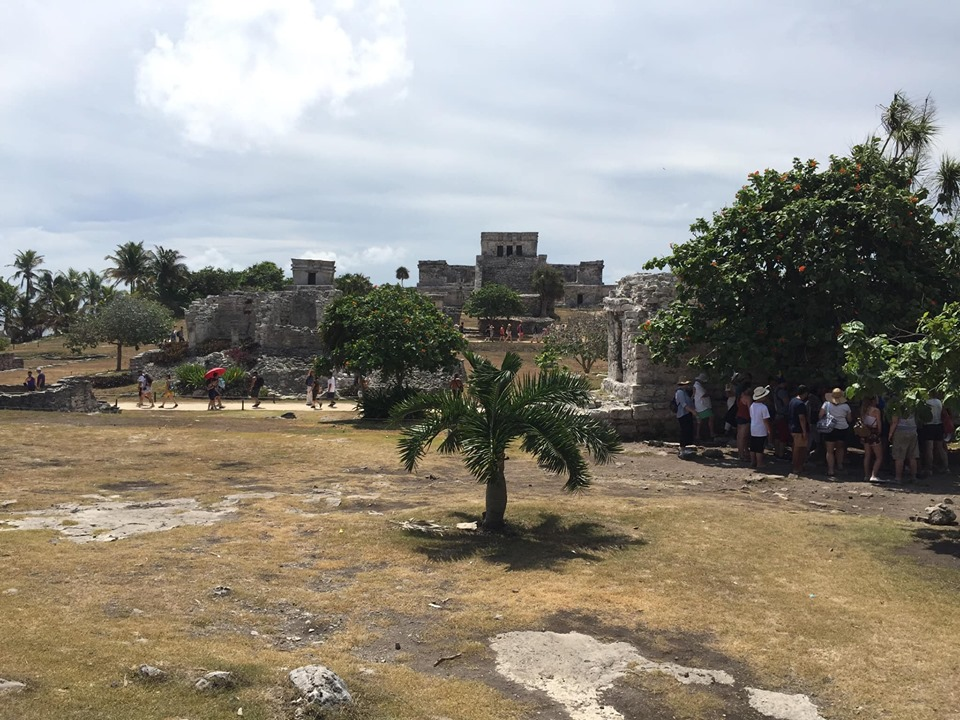

July 2019 I had the priviledge of attending the wedding of my closest friends. The wedding took place just outside of playa del carmen at the Blue Venado Beach Club.
Before the wedding I decided to spend a few days checking out the surrounding areas as you never know when you could be this way again. As we know Chichen Itza has become one of the new seven wonders of the modern World, so it goes without saying this was a definite must see.
Chichen Itza which means “at the mouth of the well of Itza “, is the 2nd most visited archeological site of Mexico today. The Kukulkan Pyramid in Chichen-Itza which known as “El Castillo” (the castle), is one of the new seven wonders of the world elected in 07.07.2007. It is exactly 24 m. high considering the upper platform.
Apart from the Kukulkan Pyramid, in Chichen Itza there many other archaeological sites to visit, all carrying traces from Mayan Culture in many ways.
From here I also visited Tulum which is another mayan civilisation that was built many centuries ago.
